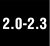

12.9. Related Modules
The following are auxiliary modules that you may use when dealing with the import of Python modules. Of these listed below, modulefinder, pkgutil, and zipimport are new as of Python 2.3, and the distutils package was introduced back in version 2.0.

imp this module gives you access to some lower-level importer functionality. modulefinder this is a module that lets you find all the modules that are used by a Python script. You can either use the ModuleFinder class or just run it as a script giving it the filename of a(nother) Python module with which to do module analysis on. pkgutil this module gives those putting together Python packages for distribution a way to place package files in various places yet maintain the abstraction of a single "package" file hierarchy. It uses *.pkg files in a manner similar to the way the site module uses *.pth files to help define the package path. site using this module along with *.pth files gives you the ability to specify the order in which packages are added to your Python path, i.e., sys.path, PYTHONPATH. You do not have to import it explicitly as the importer already uses it by defaultyou need to use the -S switch when starting up Python to turn it off. Also, you can perform further arbitrary site-specific customizations by adding a sitecustomize module whose import is attempted after the path manipulations have been completed. zipimport this module allows you to be able to import Python modules that are archived in ZIP files. Note that the functionality in this file is "automagically" called by the importer so there is no need to import this file for use in any application. We mention it here solely as a reference. distutils this package provides support for building, installing, and distributing Python modules and packages. It also aids in building Python extensions written in C/C++. More information on distutils can be found in the Python documentation available at these links: http://docs.python.org/dist/dist.html http://docs.python.org/inst/inst.html
|